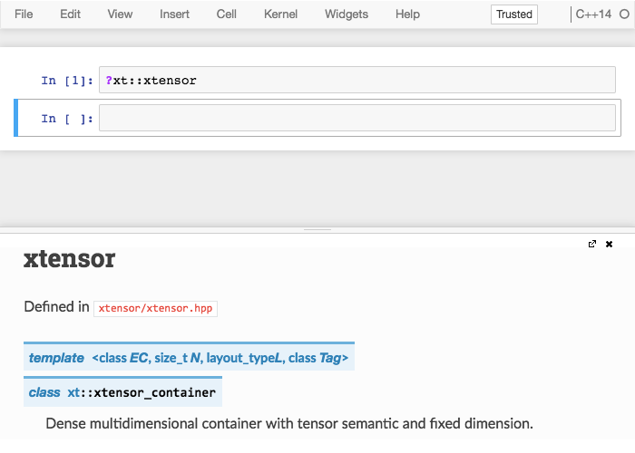

Inline documentation¶
The standard library¶
xeus-cling 内核允许用户访问关于标准库的函数和类的帮助。
在代码单元中，输入 ?std::vector 将简单地显示 cppreference 网站中关于 vector 的帮助页面。
启用第三方库的快速帮助功能¶
快速帮助功能可以为其他库启用。要做到这一点，你的库的 doxygen 标签文件必须放在安装前缀的 xeus-cling “data” 目录下，即
PREFIX/share/xeus-cling/tagfiles
为了让 xeus-cling 能够利用这些信息，必须在安装前缀的 xeus-cling configuration 目录下放置一个 JSON 配置文件，即
PREFIX/etc/xeus-cling/tags.d
注解
关于如何为 doxygen 文档生成标签文件的更多信息，请查看 doxygen 文档的 相关部分。
JSON 配置文件的格式如下
{
"url": "Base URL for the documentation",
"tagfile": "Name of the doxygen tagfile"
}
例如，标准库的文档的 JSON 配置文件是
{
"url": "https://en.cppreference.com/w/",
"tagfile": "cppreference-doxygen-web.tag.xml"
}
注解
我们建议你在 URL 中只使用 https 协议。的确，当笔记本通过 https 提供服务时，来自不安全来源的内容将不会被呈现。
breathe 和 Sphinx 文档的案例¶
另一个流行的文档系统是 doxygen 和 sphinx 的组合，这要感谢 breathe 包，它使用 doxygen 的 XML 输出生成 sphinx 文档。
xhale Python 软件包可以用来把 breathe 产生的 sphinx 清单文件转换成 doxygen 标签文件。
